Design Effects on Standard Error Relative Bias Estimates
2020-06-01
Last updated: 2020-06-01
Checks: 6 1
Knit directory: mcfa-para-est/
This reproducible R Markdown analysis was created with workflowr (version 1.6.2). The Checks tab describes the reproducibility checks that were applied when the results were created. The Past versions tab lists the development history.
The R Markdown is untracked by Git. To know which version of the R Markdown file created these results, you’ll want to first commit it to the Git repo. If you’re still working on the analysis, you can ignore this warning. When you’re finished, you can run wflow_publish to commit the R Markdown file and build the HTML.
Great job! The global environment was empty. Objects defined in the global environment can affect the analysis in your R Markdown file in unknown ways. For reproduciblity it’s best to always run the code in an empty environment.
The command set.seed(20190614) was run prior to running the code in the R Markdown file. Setting a seed ensures that any results that rely on randomness, e.g. subsampling or permutations, are reproducible.
Great job! Recording the operating system, R version, and package versions is critical for reproducibility.
Nice! There were no cached chunks for this analysis, so you can be confident that you successfully produced the results during this run.
Great job! Using relative paths to the files within your workflowr project makes it easier to run your code on other machines.
Great! You are using Git for version control. Tracking code development and connecting the code version to the results is critical for reproducibility.
The results in this page were generated with repository version eecb366. See the Past versions tab to see a history of the changes made to the R Markdown and HTML files.
Note that you need to be careful to ensure that all relevant files for the analysis have been committed to Git prior to generating the results (you can use wflow_publish or wflow_git_commit). workflowr only checks the R Markdown file, but you know if there are other scripts or data files that it depends on. Below is the status of the Git repository when the results were generated:
Ignored files:
Ignored: .Rhistory
Ignored: .Rproj.user/
Ignored: data/compiled_para_results.txt
Ignored: data/results_bias_est.csv
Ignored: data/results_bias_se.csv
Ignored: fig/
Ignored: manuscript/
Ignored: output/fact-cov-converge-largeN.pdf
Ignored: output/fact-cov-converge-medN.pdf
Ignored: output/fact-cov-converge-smallN.pdf
Ignored: output/loading-converge-largeN.pdf
Ignored: output/loading-converge-medN.pdf
Ignored: output/loading-converge-smallN.pdf
Ignored: references/
Ignored: sera-presentation/
Untracked files:
Untracked: analysis/ml-cfa-parameter-anova-estimates.Rmd
Untracked: analysis/ml-cfa-parameter-anova-relative-bias.Rmd
Untracked: analysis/ml-cfa-parameter-bias-latent-ICC.Rmd
Untracked: analysis/ml-cfa-parameter-bias-observed-ICC.Rmd
Untracked: analysis/ml-cfa-parameter-convergence-correlation-pubfigure.Rmd
Untracked: analysis/ml-cfa-parameter-convergence-trace-plots-factor-loadings.Rmd
Untracked: analysis/ml-cfa-standard-error-anova-logSE.Rmd
Untracked: analysis/ml-cfa-standard-error-anova-relative-bias.Rmd
Untracked: analysis/ml-cfa-standard-error-bias-factor-loadings.Rmd
Untracked: analysis/ml-cfa-standard-error-bias-overview.Rmd
Untracked: code/r_functions.R
Unstaged changes:
Modified: analysis/index.Rmd
Modified: analysis/ml-cfa-parameter-convergence-correlation-factor-loadings.Rmd
Modified: code/get_data.R
Modified: code/load_packages.R
Note that any generated files, e.g. HTML, png, CSS, etc., are not included in this status report because it is ok for generated content to have uncommitted changes.
There are no past versions. Publish this analysis with wflow_publish() to start tracking its development.
The purpose of this page is to identify the impact of design factors on standard error estimates. This is done using analysis of variance (factorial) on the estimates of relative bias (RB) for the standard Error.
Packages and Set-Up
rm(list=ls())
source(paste0(getwd(),"/code/load_packages.R"))
source(paste0(getwd(),"/code/get_data.R"))
source(paste0(getwd(),"/code/r_functions.R"))
# general options
theme_set(theme_bw())
options(digits=3)
##Chunk iptions
knitr::opts_chunk$set(out.width="225%")Data Management
pvec <- c(paste0('selambda1',1:6), paste0('selambda2',6:10), 'sepsiW12','sepsiB1', 'sepsiB2', 'sepsiB12', paste0('sethetaB',1:10))
# stored "true" values of parameters by each condition
ptvec <- c(paste0('EmpSElambda1',1:6), paste0('EmpSElambda2',6:10), 'EmpSEpsiW12','EmpSEpsiB1', 'EmpSEpsiB2', 'EmpSEpsiB12', paste0('EmpSEthetaB',1:10))
# take out non-converged/inadmissible cases
sim_results <- filter(sim_results, Converge==1, Admissible==1)
# Set conditions levels as categorical values
sim_results <- sim_results %>%
mutate(N1 = factor(N1, c("5", "10", "30")),
N2 = factor(N2, c("30", "50", "100", "200")),
ICC_OV = factor(ICC_OV, c("0.1","0.3", "0.5")),
ICC_LV = factor(ICC_LV, c("0.1", "0.5")))
# Compute empirical standard errors
sim_results <- sim_results %>%
group_by(Condition, Estimator) %>%
mutate(EmpSElambda11 = sd(lambda11), EmpSElambda12 = sd(lambda12),
EmpSElambda13 = sd(lambda13), EmpSElambda14 = sd(lambda14),
EmpSElambda15 = sd(lambda15), EmpSElambda16 = sd(lambda16),
EmpSElambda26 = sd(lambda26), EmpSElambda27 = sd(lambda27),
EmpSElambda28 = sd(lambda28), EmpSElambda29 = sd(lambda29),
EmpSElambda210 = sd(lambda210),
EmpSEpsiW12 = sd(psiW12), EmpSEpsiB1 = sd(psiB1),
EmpSEpsiB2 = sd(psiB2), EmpSEpsiB12 = sd(psiB12),
EmpSEthetaB1 = sd(thetaB1), EmpSEthetaB2 = sd(thetaB2),
EmpSEthetaB3 = sd(thetaB3), EmpSEthetaB4 = sd(thetaB4),
EmpSEthetaB5 = sd(thetaB5), EmpSEthetaB6 = sd(thetaB6),
EmpSEthetaB7 = sd(thetaB7), EmpSEthetaB8 = sd(thetaB8),
EmpSEthetaB9 = sd(thetaB9), EmpSEthetaB10 = sd(thetaB10))
# convert to long format
long_res1 <- sim_results[,c("Condition", "Replication", "N1", "N2", "ICC_OV", "ICC_LV", "Estimator", pvec)] %>%
pivot_longer(
cols = all_of(pvec),
names_to = "Parameter",
values_to = "EstimateSE"
)
long_res2 <- sim_results[,c("Condition", "Replication", "N1", "N2", "ICC_OV", "ICC_LV", "Estimator", ptvec)] %>%
pivot_longer(
cols = all_of(ptvec),
names_to = "ParameterT",
values_to = "EmpiricalSE"
)
long_results <- long_res1
long_results$ParameterT <- long_res2$ParameterT
long_results$EmpiricalSE <- long_res2$EmpiricalSENow, we are only going to do ANOVA on the relative bias estimates (RB).
long_results <- long_results %>%
mutate(RB = ((EstimateSE - EmpiricalSE))/EmpiricalSE*100)
# Object to Story Results
resultsList <- list()ANOVA and effect sizes for distributional differences
For this simulation experiment, there were 5 factors systematically varied. Of these 5 factors, 4 were factors influencing the observed data and 1 were factors pertaining to estimation and model fitting. The factors were
- Level-1 sample size (5, 10, 30)
- Level-2 sample size (30, 50, 100, 200)
- Observed indicator ICC (.1, .3, .5)
- Latent variable ICC (.1, .5)
- Model estimator (MLR, ULSMV, WLSMV)
For each parameter SE, an analysis of variance (ANOVA) was conducted in order to test how much influence each of these design factors.
General Linear Model investigated for estimated SE was: \[ Y_{ijklmn} = \mu + \alpha_{j} + \beta_{k} + \gamma_{l} + \delta_m + \theta_n +\\ (\alpha\beta)_{jk} + (\alpha\gamma)_{jl}+ (\alpha\delta)_{jm} + (\alpha\theta)_{jn}+ \\ (\beta\gamma)_{kl}+ (\beta\delta)_{km} + (\beta\theta)_{kn}+ (\gamma\delta)_{lm} + + (\gamma\theta)_{ln} + (\delta\theta)_{mn} + \varepsilon_{ijklmn} \] where
- \(\mu\) is the grand mean,
- \(\alpha_{j}\) is the effect of Level-1 sample size,
- \(\beta_{k}\) is the effect of Level-2 sample size,
- \(\gamma_{l}\) is the effect of Observed indicator ICC,
- \(\delta_m\) is the effect of Latent variable ICC,
- \(\theta_n\) is the effect of Model estimator ,
- \((\alpha\beta)_{jk}\) is the interaction between Level-1 sample size and Level-2 sample size,
- \((\alpha\gamma)_{jl}\) is the interaction between Level-1 sample size and Observed indicator ICC,
- \((\alpha\delta)_{jm}\) is the interaction between Level-1 sample size and Latent variable ICC,
- \((\alpha\theta)_{jn}\) is the interaction between Level-1 sample size and Model estimator ,
- \((\beta\gamma)_{kl}\) is the interaction between Level-2 sample size and Observed indicator ICC,
- \((\beta\delta)_{km}\) is the interaction between Level-2 sample size and Latent variable ICC,
- \((\beta\theta)_{kn}\) is the interaction between Level-2 sample size and Model estimator ,
- \((\gamma\delta)_{lm}\) is the interaction between Observed indicator ICC and Latent variable ICC,
- \((\gamma\theta)_{ln}\) is the interaction between Observed indicator ICC and Model estimator ,
- \((\delta\theta)_{mn}\) is the interaction between Latent variable ICC and Model estimator , and
- \(\varepsilon_{ijklmn}\) is the residual error for the \(i^{th}\) observed SE estimate.
Note that for most of these terms there are actually 2 or 3 terms actually estimated. These additional terms are because of the categorical nature of each effect so we have to create “reference” groups and calculate the effect of being in a group other than the reference group. Higher order interactions were omitted for clarity of interpretation of the model. If interested in higher-order interactions, please see Maxwell and Delaney (2004).
The real reason the higher order interaction was omitted: Because I have no clue how to interpret a 5-way interaction (whatever the heck that is), I am limiting the ANOVA to all bivariate interactions.
Diagnostics for factorial ANOVA:
- Independence of Observations
- Normality of residuals across cells for the design
- Homogeneity of variance across cells
Independence of observations is by design, where these data were randomly generated from a known population and observations are across replications and are independent. The normality assumptions is that the residuals of the models are normally distributed across the design cells. The normality assumption is tested by investigation by Shapiro-Wilks Test, the K-S test, and visual inspection of QQ-plots and histograms. The equality of variance is checked through Levene’s test across all the different conditions/groupings. Furthermore, the plots of the residuals are also indicative of the equality of variance across groups as there should be no apparent pattern to the residual plots.
Factor Loadings Standard Error
Assumption Checking
sdat <- filter(long_results, Parameter %like% "lambda")
sdat <- sdat %>%
group_by(Replication, N1, N2, ICC_OV, ICC_LV, Estimator) %>%
summarise(RB = mean(RB))
# first, look at summary of RB Estimates
boxplot(sdat$RB)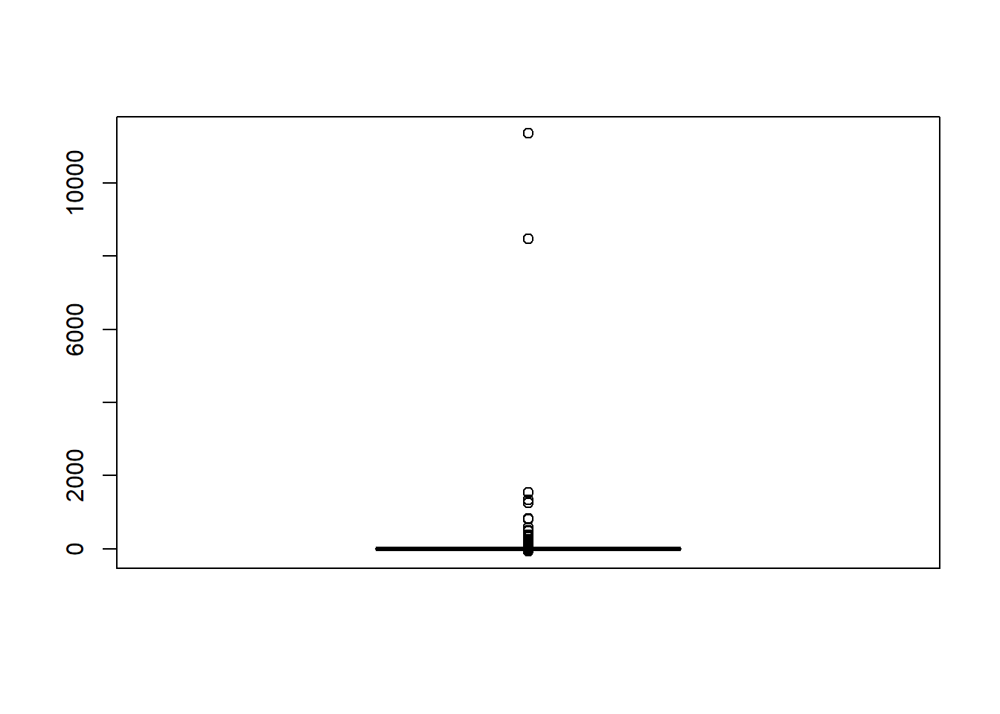
## model factors...
flist <- c('N1', 'N2', 'ICC_OV', 'ICC_LV', 'Estimator')
## Check assumptions
anova_assumptions_check(
sdat, 'RB', factors = flist,
model = as.formula('RB ~ N1 + N2 + ICC_OV + ICC_LV + Estimator + N1:N2 + N1:ICC_OV + N1:ICC_LV + N1:Estimator + N2:ICC_OV + N2:ICC_LV + N2:Estimator + ICC_OV:ICC_LV + ICC_OV:Estimator + ICC_LV:Estimator'))
=============================
Tests and Plots of Normality: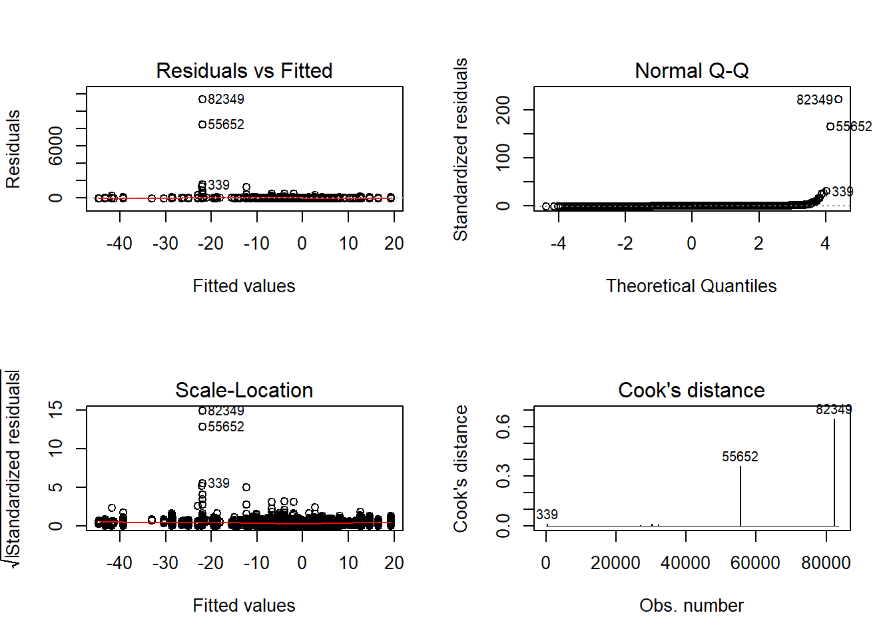
Shapiro-Wilks Test of Normality of Residuals:
Shapiro-Wilk normality test
data: res
W = 0.9, p-value <2e-16
K-S Test for Normality of Residuals:
One-sample Kolmogorov-Smirnov test
data: aov.out$residuals
D = 0.4, p-value <2e-16
alternative hypothesis: two-sided`stat_bin()` using `bins = 30`. Pick better value with `binwidth`.Warning: Removed 38 rows containing non-finite values (stat_bin).Warning: Removed 3 rows containing missing values (geom_bar).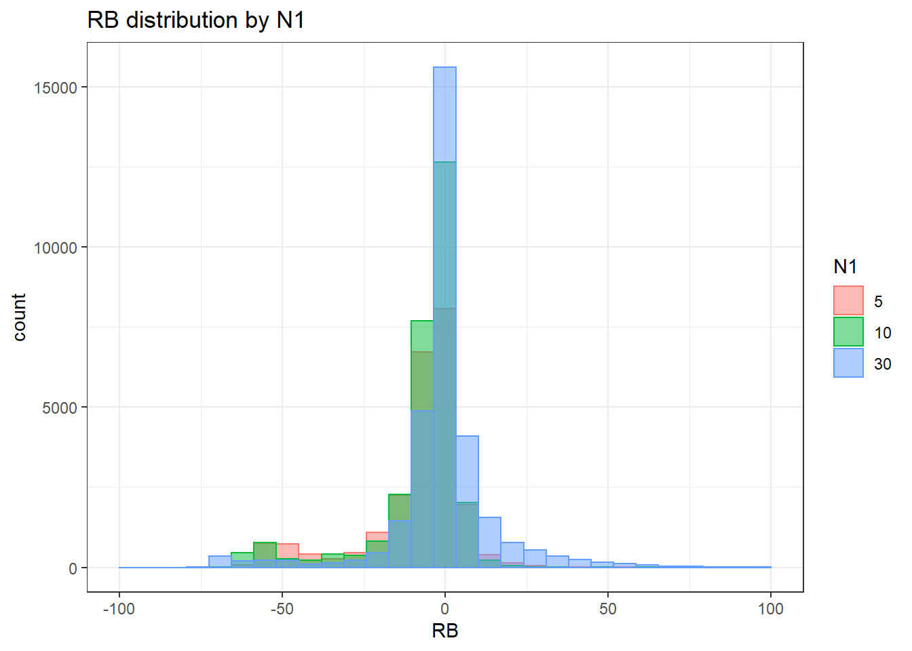
`stat_bin()` using `bins = 30`. Pick better value with `binwidth`.Warning: Removed 38 rows containing non-finite values (stat_bin).Warning: Removed 4 rows containing missing values (geom_bar).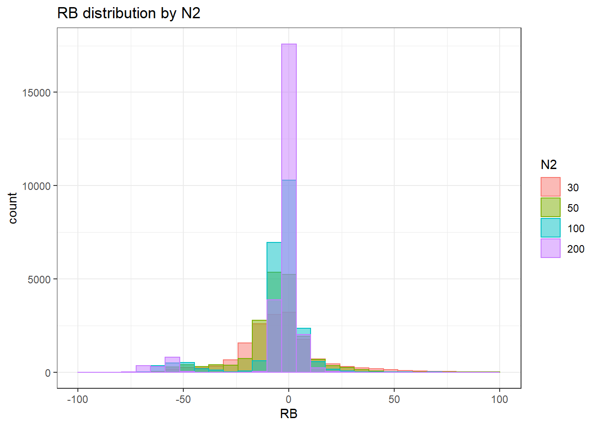
`stat_bin()` using `bins = 30`. Pick better value with `binwidth`.Warning: Removed 38 rows containing non-finite values (stat_bin).Warning: Removed 3 rows containing missing values (geom_bar).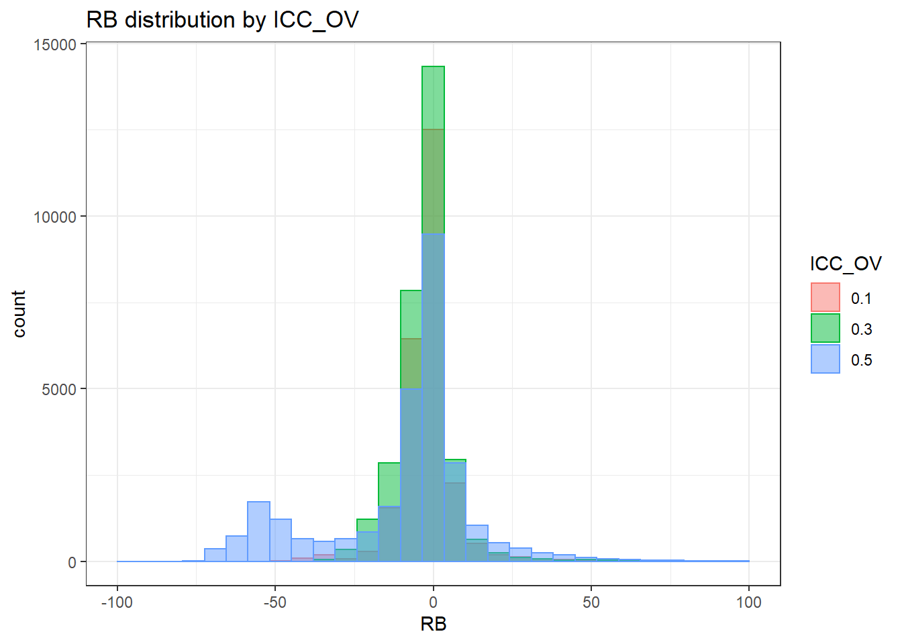
`stat_bin()` using `bins = 30`. Pick better value with `binwidth`.Warning: Removed 38 rows containing non-finite values (stat_bin).Warning: Removed 2 rows containing missing values (geom_bar).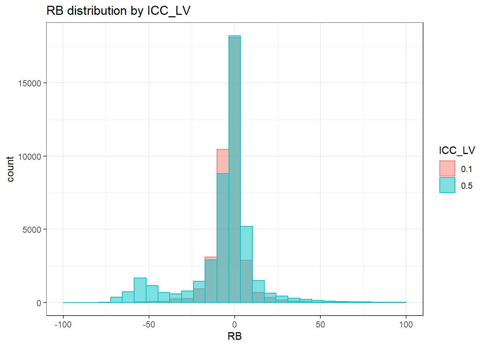
`stat_bin()` using `bins = 30`. Pick better value with `binwidth`.Warning: Removed 38 rows containing non-finite values (stat_bin).Warning: Removed 3 rows containing missing values (geom_bar).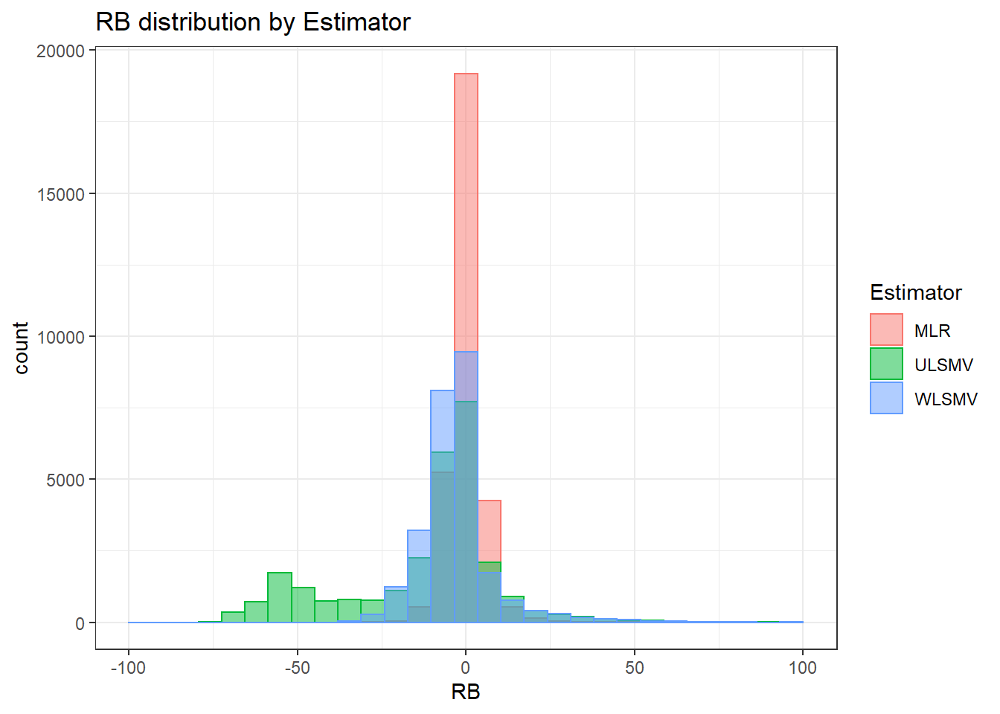
=============================
Tests of Homogeneity of Variance
Levenes Test: N1
Levene's Test for Homogeneity of Variance (center = "mean")
Df F value Pr(>F)
group 2 18.6 8.2e-09 ***
83507
---
Signif. codes: 0 '***' 0.001 '**' 0.01 '*' 0.05 '.' 0.1 ' ' 1
Levenes Test: N2
Levene's Test for Homogeneity of Variance (center = "mean")
Df F value Pr(>F)
group 3 100 <2e-16 ***
83506
---
Signif. codes: 0 '***' 0.001 '**' 0.01 '*' 0.05 '.' 0.1 ' ' 1
Levenes Test: ICC_OV
Levene's Test for Homogeneity of Variance (center = "mean")
Df F value Pr(>F)
group 2 556 <2e-16 ***
83507
---
Signif. codes: 0 '***' 0.001 '**' 0.01 '*' 0.05 '.' 0.1 ' ' 1
Levenes Test: ICC_LV
Levene's Test for Homogeneity of Variance (center = "mean")
Df F value Pr(>F)
group 1 451 <2e-16 ***
83508
---
Signif. codes: 0 '***' 0.001 '**' 0.01 '*' 0.05 '.' 0.1 ' ' 1
Levenes Test: Estimator
Levene's Test for Homogeneity of Variance (center = "mean")
Df F value Pr(>F)
group 2 628 <2e-16 ***
83507
---
Signif. codes: 0 '***' 0.001 '**' 0.01 '*' 0.05 '.' 0.1 ' ' 1# was bad... Remove extreme outliers
quantile(sdat$RB, c(0.001, 0.01, 0.99, 0.999)) 0.1% 1% 99% 99.9%
-68.8 -60.1 36.2 76.9 # remove RB>100
sdat <- filter(sdat, RB <= 100)
boxplot(sdat$RB)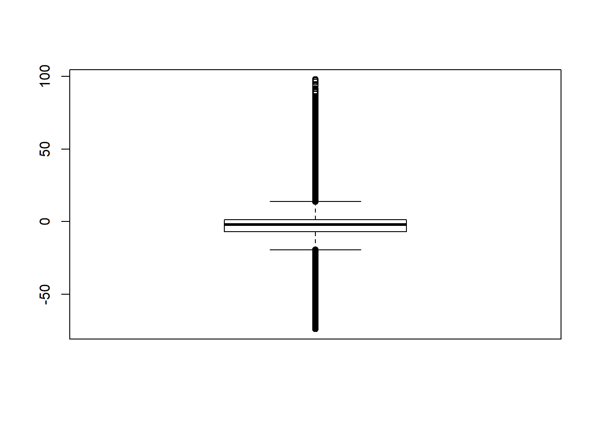
# rerun
## Check assumptions
anova_assumptions_check(
sdat, 'RB', factors = flist,
model = as.formula('RB ~ N1 + N2 + ICC_OV + ICC_LV + Estimator + N1:N2 + N1:ICC_OV + N1:ICC_LV + N1:Estimator + N2:ICC_OV + N2:ICC_LV + N2:Estimator + ICC_OV:ICC_LV + ICC_OV:Estimator + ICC_LV:Estimator'))
=============================
Tests and Plots of Normality: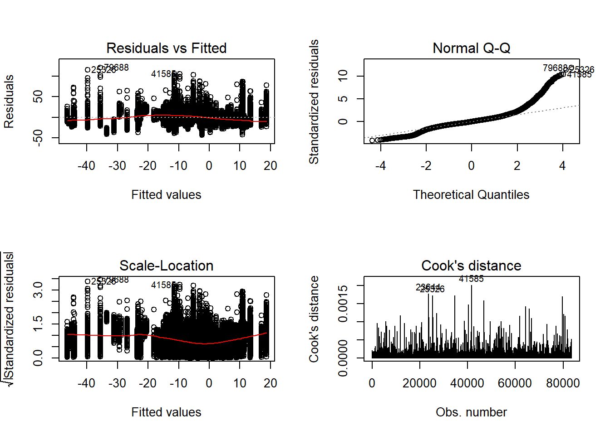
Shapiro-Wilks Test of Normality of Residuals:
Shapiro-Wilk normality test
data: res
W = 0.9, p-value <2e-16
K-S Test for Normality of Residuals:
One-sample Kolmogorov-Smirnov test
data: aov.out$residuals
D = 0.4, p-value <2e-16
alternative hypothesis: two-sided`stat_bin()` using `bins = 30`. Pick better value with `binwidth`.Warning: Removed 3 rows containing missing values (geom_bar).`stat_bin()` using `bins = 30`. Pick better value with `binwidth`.Warning: Removed 4 rows containing missing values (geom_bar).`stat_bin()` using `bins = 30`. Pick better value with `binwidth`.Warning: Removed 3 rows containing missing values (geom_bar).`stat_bin()` using `bins = 30`. Pick better value with `binwidth`.Warning: Removed 2 rows containing missing values (geom_bar).`stat_bin()` using `bins = 30`. Pick better value with `binwidth`.Warning: Removed 3 rows containing missing values (geom_bar).
=============================
Tests of Homogeneity of Variance
Levenes Test: N1
Levene's Test for Homogeneity of Variance (center = "mean")
Df F value Pr(>F)
group 2 167 <2e-16 ***
83469
---
Signif. codes: 0 '***' 0.001 '**' 0.01 '*' 0.05 '.' 0.1 ' ' 1
Levenes Test: N2
Levene's Test for Homogeneity of Variance (center = "mean")
Df F value Pr(>F)
group 3 1026 <2e-16 ***
83468
---
Signif. codes: 0 '***' 0.001 '**' 0.01 '*' 0.05 '.' 0.1 ' ' 1
Levenes Test: ICC_OV
Levene's Test for Homogeneity of Variance (center = "mean")
Df F value Pr(>F)
group 2 11697 <2e-16 ***
83469
---
Signif. codes: 0 '***' 0.001 '**' 0.01 '*' 0.05 '.' 0.1 ' ' 1
Levenes Test: ICC_LV
Levene's Test for Homogeneity of Variance (center = "mean")
Df F value Pr(>F)
group 1 7945 <2e-16 ***
83470
---
Signif. codes: 0 '***' 0.001 '**' 0.01 '*' 0.05 '.' 0.1 ' ' 1
Levenes Test: Estimator
Levene's Test for Homogeneity of Variance (center = "mean")
Df F value Pr(>F)
group 2 14504 <2e-16 ***
83469
---
Signif. codes: 0 '***' 0.001 '**' 0.01 '*' 0.05 '.' 0.1 ' ' 1ANOVA Results
model = as.formula('RB ~ N1 + N2 + ICC_OV + ICC_LV + Estimator + N1:N2 + N1:ICC_OV + N1:ICC_LV + N1:Estimator + N2:ICC_OV + N2:ICC_LV + N2:Estimator + ICC_OV:ICC_LV + ICC_OV:Estimator + ICC_LV:Estimator')
fit <- aov(model, data = sdat)
fit.out <- summary(fit)
fit.out Df Sum Sq Mean Sq F value Pr(>F)
N1 2 1047170 523585 5080 <2e-16 ***
N2 3 67874 22625 220 <2e-16 ***
ICC_OV 2 891239 445620 4324 <2e-16 ***
ICC_LV 1 135863 135863 1318 <2e-16 ***
Estimator 2 2225371 1112686 10796 <2e-16 ***
N1:N2 6 500144 83357 809 <2e-16 ***
N1:ICC_OV 4 345837 86459 839 <2e-16 ***
N1:ICC_LV 2 111659 55830 542 <2e-16 ***
N1:Estimator 4 810663 202666 1966 <2e-16 ***
N2:ICC_OV 6 227670 37945 368 <2e-16 ***
N2:ICC_LV 3 344871 114957 1115 <2e-16 ***
N2:Estimator 6 70705 11784 114 <2e-16 ***
ICC_OV:ICC_LV 2 911306 455653 4421 <2e-16 ***
ICC_OV:Estimator 4 3632054 908013 8810 <2e-16 ***
ICC_LV:Estimator 2 684670 342335 3322 <2e-16 ***
Residuals 83422 8597901 103
---
Signif. codes: 0 '***' 0.001 '**' 0.01 '*' 0.05 '.' 0.1 ' ' 1resultsList[["FactorLoadings"]] <- cbind(omega2(fit.out), p_omega2(fit.out))
resultsList[["FactorLoadings"]] omega^2 partial-omega^2
N1 0.0508 0.1085
N2 0.0033 0.0078
ICC_OV 0.0432 0.0939
ICC_LV 0.0066 0.0155
Estimator 0.1080 0.2055
N1:N2 0.0242 0.0549
N1:ICC_OV 0.0168 0.0386
N1:ICC_LV 0.0054 0.0128
N1:Estimator 0.0393 0.0861
N2:ICC_OV 0.0110 0.0257
N2:ICC_LV 0.0167 0.0385
N2:Estimator 0.0034 0.0081
ICC_OV:ICC_LV 0.0442 0.0958
ICC_OV:Estimator 0.1762 0.2968
ICC_LV:Estimator 0.0332 0.0737Level-1 factor Covariance Standard Error
Assumption Checking
sdat <- filter(long_results, Parameter %like% "psiW")
sdat <- sdat %>%
group_by(Replication, N1, N2, ICC_OV, ICC_LV, Estimator) %>%
summarise(RB = mean(RB))
# first, look at summary of RB Estimates
boxplot(sdat$RB)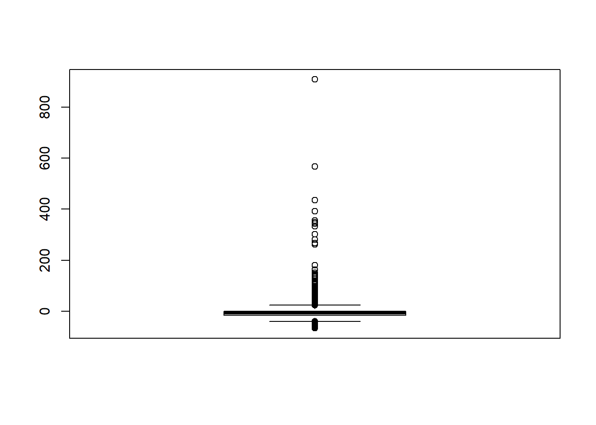
## model factors...
flist <- c('N1', 'N2', 'ICC_OV', 'ICC_LV', 'Estimator')
## Check assumptions
anova_assumptions_check(
sdat, 'RB', factors = flist,
model = as.formula('RB ~ N1 + N2 + ICC_OV + ICC_LV + Estimator + N1:N2 + N1:ICC_OV + N1:ICC_LV + N1:Estimator + N2:ICC_OV + N2:ICC_LV + N2:Estimator + ICC_OV:ICC_LV + ICC_OV:Estimator + ICC_LV:Estimator'))
=============================
Tests and Plots of Normality:
Shapiro-Wilks Test of Normality of Residuals:
Shapiro-Wilk normality test
data: res
W = 0.8, p-value <2e-16
K-S Test for Normality of Residuals:Warning in ks.test(aov.out$residuals, "pnorm", alternative = "two.sided"): ties
should not be present for the Kolmogorov-Smirnov test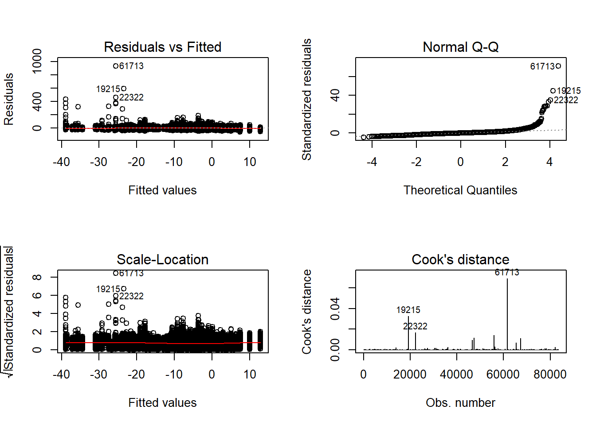
One-sample Kolmogorov-Smirnov test
data: aov.out$residuals
D = 0.4, p-value <2e-16
alternative hypothesis: two-sided`stat_bin()` using `bins = 30`. Pick better value with `binwidth`.Warning: Removed 30 rows containing non-finite values (stat_bin).Warning: Removed 3 rows containing missing values (geom_bar).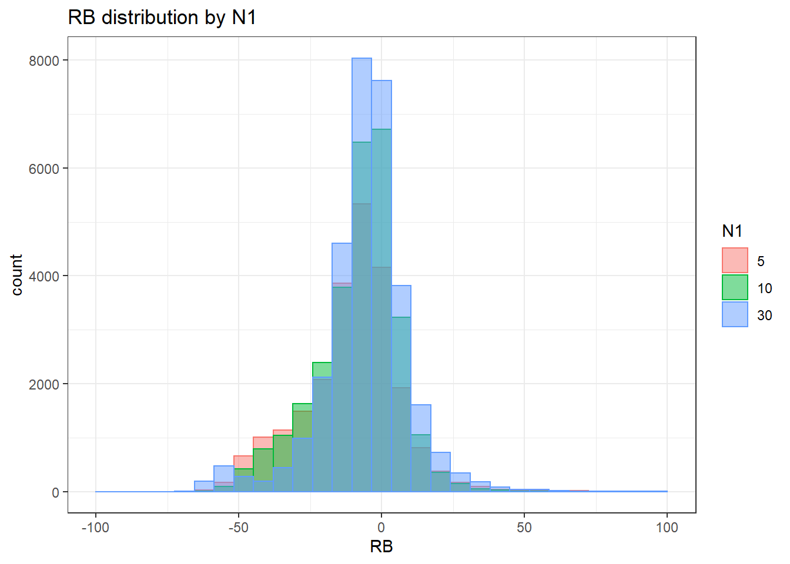
`stat_bin()` using `bins = 30`. Pick better value with `binwidth`.Warning: Removed 30 rows containing non-finite values (stat_bin).Warning: Removed 4 rows containing missing values (geom_bar).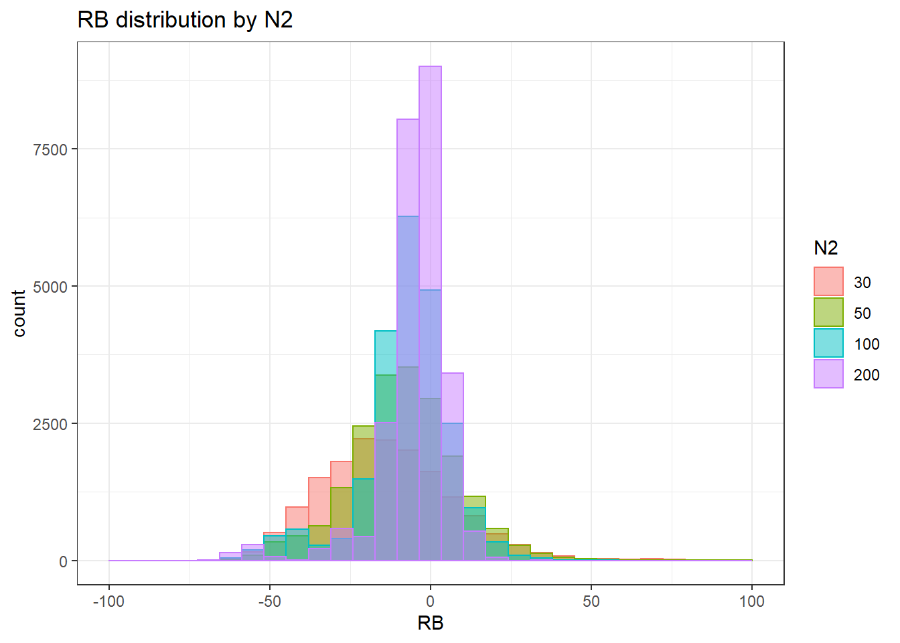
`stat_bin()` using `bins = 30`. Pick better value with `binwidth`.Warning: Removed 30 rows containing non-finite values (stat_bin).Warning: Removed 3 rows containing missing values (geom_bar).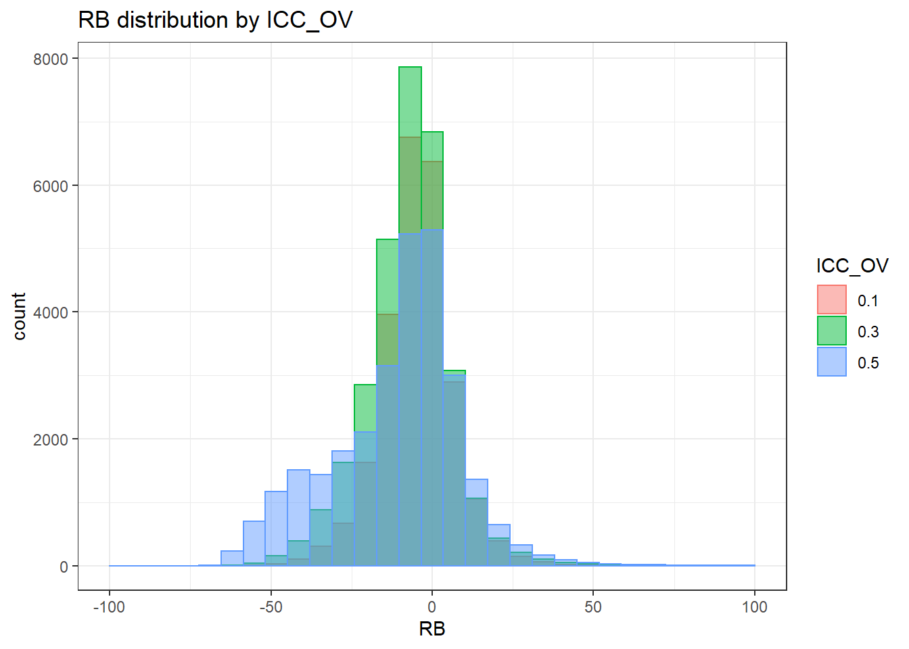
`stat_bin()` using `bins = 30`. Pick better value with `binwidth`.Warning: Removed 30 rows containing non-finite values (stat_bin).Warning: Removed 2 rows containing missing values (geom_bar).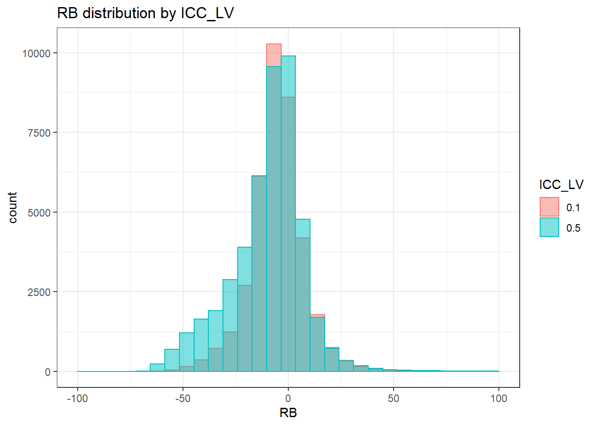
`stat_bin()` using `bins = 30`. Pick better value with `binwidth`.Warning: Removed 30 rows containing non-finite values (stat_bin).Warning: Removed 3 rows containing missing values (geom_bar).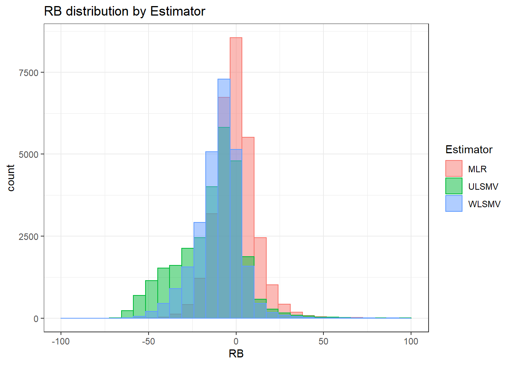
=============================
Tests of Homogeneity of Variance
Levenes Test: N1
Levene's Test for Homogeneity of Variance (center = "mean")
Df F value Pr(>F)
group 2 249 <2e-16 ***
83507
---
Signif. codes: 0 '***' 0.001 '**' 0.01 '*' 0.05 '.' 0.1 ' ' 1
Levenes Test: N2
Levene's Test for Homogeneity of Variance (center = "mean")
Df F value Pr(>F)
group 3 2464 <2e-16 ***
83506
---
Signif. codes: 0 '***' 0.001 '**' 0.01 '*' 0.05 '.' 0.1 ' ' 1
Levenes Test: ICC_OV
Levene's Test for Homogeneity of Variance (center = "mean")
Df F value Pr(>F)
group 2 3328 <2e-16 ***
83507
---
Signif. codes: 0 '***' 0.001 '**' 0.01 '*' 0.05 '.' 0.1 ' ' 1
Levenes Test: ICC_LV
Levene's Test for Homogeneity of Variance (center = "mean")
Df F value Pr(>F)
group 1 2313 <2e-16 ***
83508
---
Signif. codes: 0 '***' 0.001 '**' 0.01 '*' 0.05 '.' 0.1 ' ' 1
Levenes Test: Estimator
Levene's Test for Homogeneity of Variance (center = "mean")
Df F value Pr(>F)
group 2 2414 <2e-16 ***
83507
---
Signif. codes: 0 '***' 0.001 '**' 0.01 '*' 0.05 '.' 0.1 ' ' 1# was bad... Remove extreme outliers
quantile(sdat$RB, c(0.001, 0.01, 0.99, 0.999)) 0.1% 1% 99% 99.9%
-60.8 -52.7 29.4 67.2 # remove RB>100
sdat <- filter(sdat, RB <= 100)
boxplot(sdat$RB)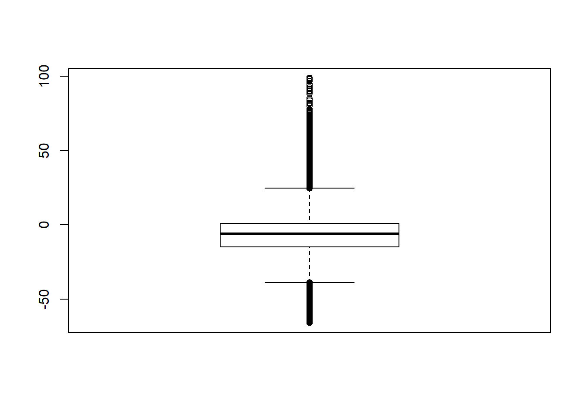
# rerun
## Check assumptions
anova_assumptions_check(
sdat, 'RB', factors = flist,
model = as.formula('RB ~ N1 + N2 + ICC_OV + ICC_LV + Estimator + N1:N2 + N1:ICC_OV + N1:ICC_LV + N1:Estimator + N2:ICC_OV + N2:ICC_LV + N2:Estimator + ICC_OV:ICC_LV + ICC_OV:Estimator + ICC_LV:Estimator'))
=============================
Tests and Plots of Normality:
Shapiro-Wilks Test of Normality of Residuals:
Shapiro-Wilk normality test
data: res
W = 1, p-value <2e-16
K-S Test for Normality of Residuals:Warning in ks.test(aov.out$residuals, "pnorm", alternative = "two.sided"): ties
should not be present for the Kolmogorov-Smirnov test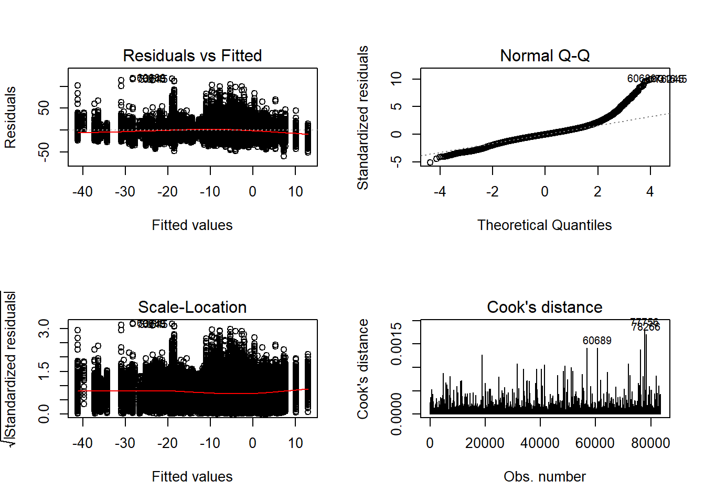
One-sample Kolmogorov-Smirnov test
data: aov.out$residuals
D = 0.4, p-value <2e-16
alternative hypothesis: two-sided`stat_bin()` using `bins = 30`. Pick better value with `binwidth`.Warning: Removed 3 rows containing missing values (geom_bar).`stat_bin()` using `bins = 30`. Pick better value with `binwidth`.Warning: Removed 4 rows containing missing values (geom_bar).`stat_bin()` using `bins = 30`. Pick better value with `binwidth`.Warning: Removed 3 rows containing missing values (geom_bar).`stat_bin()` using `bins = 30`. Pick better value with `binwidth`.Warning: Removed 2 rows containing missing values (geom_bar).`stat_bin()` using `bins = 30`. Pick better value with `binwidth`.Warning: Removed 3 rows containing missing values (geom_bar).
=============================
Tests of Homogeneity of Variance
Levenes Test: N1
Levene's Test for Homogeneity of Variance (center = "mean")
Df F value Pr(>F)
group 2 264 <2e-16 ***
83477
---
Signif. codes: 0 '***' 0.001 '**' 0.01 '*' 0.05 '.' 0.1 ' ' 1
Levenes Test: N2
Levene's Test for Homogeneity of Variance (center = "mean")
Df F value Pr(>F)
group 3 2913 <2e-16 ***
83476
---
Signif. codes: 0 '***' 0.001 '**' 0.01 '*' 0.05 '.' 0.1 ' ' 1
Levenes Test: ICC_OV
Levene's Test for Homogeneity of Variance (center = "mean")
Df F value Pr(>F)
group 2 4179 <2e-16 ***
83477
---
Signif. codes: 0 '***' 0.001 '**' 0.01 '*' 0.05 '.' 0.1 ' ' 1
Levenes Test: ICC_LV
Levene's Test for Homogeneity of Variance (center = "mean")
Df F value Pr(>F)
group 1 2862 <2e-16 ***
83478
---
Signif. codes: 0 '***' 0.001 '**' 0.01 '*' 0.05 '.' 0.1 ' ' 1
Levenes Test: Estimator
Levene's Test for Homogeneity of Variance (center = "mean")
Df F value Pr(>F)
group 2 3242 <2e-16 ***
83477
---
Signif. codes: 0 '***' 0.001 '**' 0.01 '*' 0.05 '.' 0.1 ' ' 1ANOVA Results
model = as.formula('RB ~ N1 + N2 + ICC_OV + ICC_LV + Estimator + N1:N2 + N1:ICC_OV + N1:ICC_LV + N1:Estimator + N2:ICC_OV + N2:ICC_LV + N2:Estimator + ICC_OV:ICC_LV + ICC_OV:Estimator + ICC_LV:Estimator')
fit <- aov(model, data = sdat)
fit.out <- summary(fit)
fit.out Df Sum Sq Mean Sq F value Pr(>F)
N1 2 364315 182158 1326 <2e-16 ***
N2 3 786435 262145 1908 <2e-16 ***
ICC_OV 2 382034 191017 1390 <2e-16 ***
ICC_LV 1 247444 247444 1801 <2e-16 ***
Estimator 2 2935157 1467578 10680 <2e-16 ***
N1:N2 6 609866 101644 740 <2e-16 ***
N1:ICC_OV 4 207109 51777 377 <2e-16 ***
N1:ICC_LV 2 29692 14846 108 <2e-16 ***
N1:Estimator 4 355914 88978 648 <2e-16 ***
N2:ICC_OV 6 174707 29118 212 <2e-16 ***
N2:ICC_LV 3 208686 69562 506 <2e-16 ***
N2:Estimator 6 542519 90420 658 <2e-16 ***
ICC_OV:ICC_LV 2 422966 211483 1539 <2e-16 ***
ICC_OV:Estimator 4 1132439 283110 2060 <2e-16 ***
ICC_LV:Estimator 2 333616 166808 1214 <2e-16 ***
Residuals 83430 11464454 137
---
Signif. codes: 0 '***' 0.001 '**' 0.01 '*' 0.05 '.' 0.1 ' ' 1resultsList[["Level1-FactorCovariance"]] <- cbind(omega2(fit.out), p_omega2(fit.out))
resultsList[["Level1-FactorCovariance"]] omega^2 partial-omega^2
N1 0.0180 0.0308
N2 0.0389 0.0641
ICC_OV 0.0189 0.0322
ICC_LV 0.0122 0.0211
Estimator 0.1453 0.2037
N1:N2 0.0302 0.0504
N1:ICC_OV 0.0102 0.0177
N1:ICC_LV 0.0015 0.0026
N1:Estimator 0.0176 0.0300
N2:ICC_OV 0.0086 0.0149
N2:ICC_LV 0.0103 0.0178
N2:Estimator 0.0268 0.0451
ICC_OV:ICC_LV 0.0209 0.0355
ICC_OV:Estimator 0.0560 0.0898
ICC_LV:Estimator 0.0165 0.0282Level-2 factor (co)variances Standard Error
Assumption Checking
sdat <- filter(long_results, Parameter %like% "psiB")
sdat <- sdat %>%
group_by(Replication, N1, N2, ICC_OV, ICC_LV, Estimator) %>%
summarise(RB = mean(RB))
# first, look at summary of RB Estimates
boxplot(sdat$RB)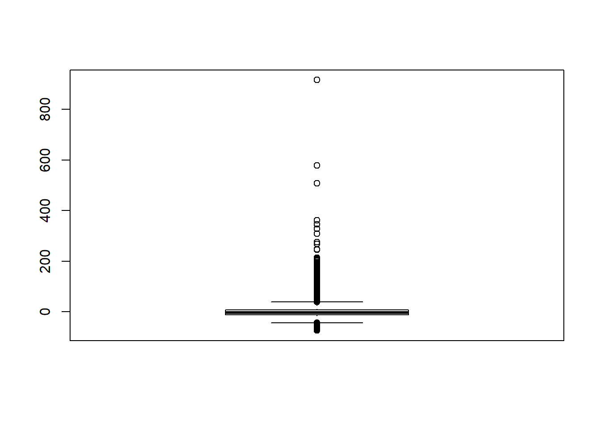
## model factors...
flist <- c('N1', 'N2', 'ICC_OV', 'ICC_LV', 'Estimator')
## Check assumptions
anova_assumptions_check(
sdat, 'RB', factors = flist,
model = as.formula('RB ~ N1 + N2 + ICC_OV + ICC_LV + Estimator + N1:N2 + N1:ICC_OV + N1:ICC_LV + N1:Estimator + N2:ICC_OV + N2:ICC_LV + N2:Estimator + ICC_OV:ICC_LV + ICC_OV:Estimator + ICC_LV:Estimator'))
=============================
Tests and Plots of Normality: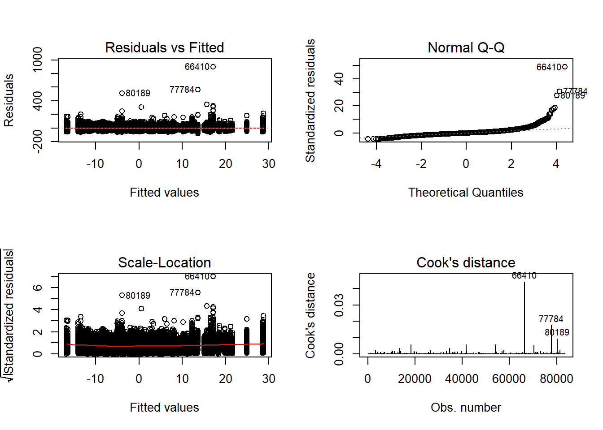
Shapiro-Wilks Test of Normality of Residuals:
Shapiro-Wilk normality test
data: res
W = 0.9, p-value <2e-16
K-S Test for Normality of Residuals:
One-sample Kolmogorov-Smirnov test
data: aov.out$residuals
D = 0.5, p-value <2e-16
alternative hypothesis: two-sided`stat_bin()` using `bins = 30`. Pick better value with `binwidth`.Warning: Removed 169 rows containing non-finite values (stat_bin).Warning: Removed 3 rows containing missing values (geom_bar).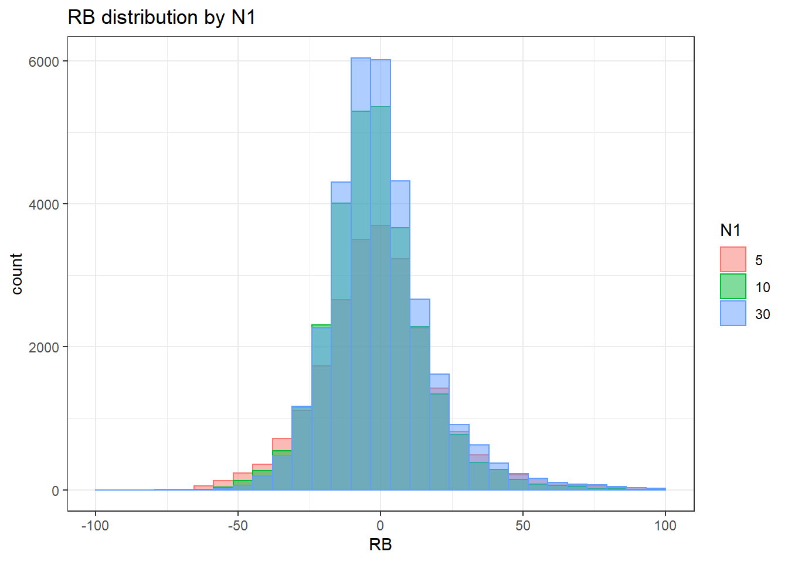
`stat_bin()` using `bins = 30`. Pick better value with `binwidth`.Warning: Removed 169 rows containing non-finite values (stat_bin).Warning: Removed 4 rows containing missing values (geom_bar).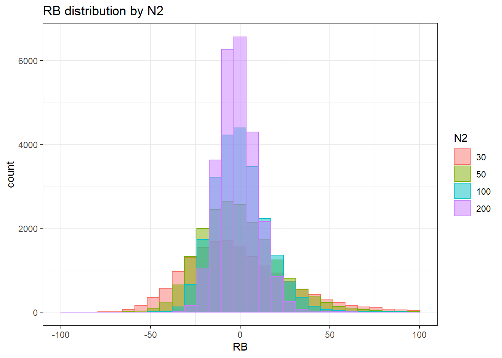
`stat_bin()` using `bins = 30`. Pick better value with `binwidth`.Warning: Removed 169 rows containing non-finite values (stat_bin).Warning: Removed 3 rows containing missing values (geom_bar).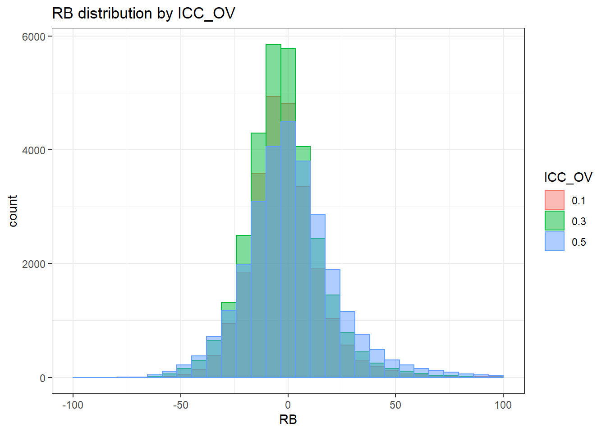
`stat_bin()` using `bins = 30`. Pick better value with `binwidth`.Warning: Removed 169 rows containing non-finite values (stat_bin).Warning: Removed 2 rows containing missing values (geom_bar).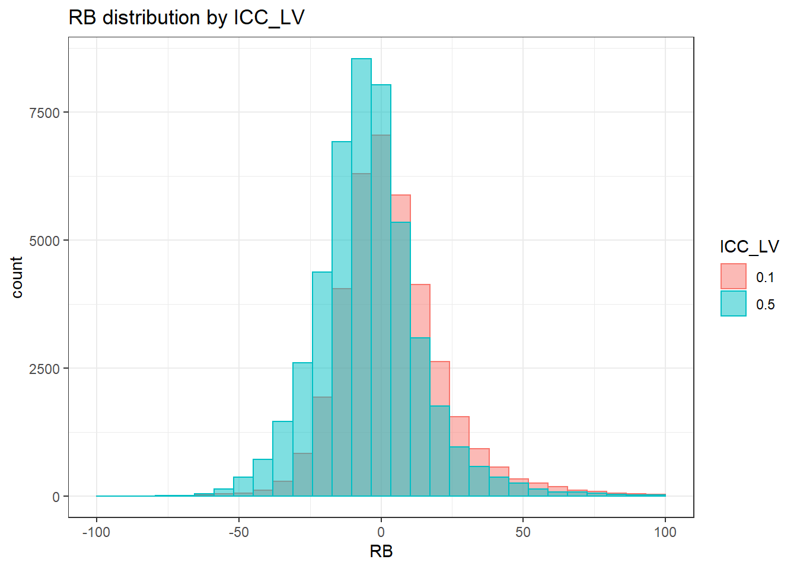
`stat_bin()` using `bins = 30`. Pick better value with `binwidth`.Warning: Removed 169 rows containing non-finite values (stat_bin).Warning: Removed 3 rows containing missing values (geom_bar).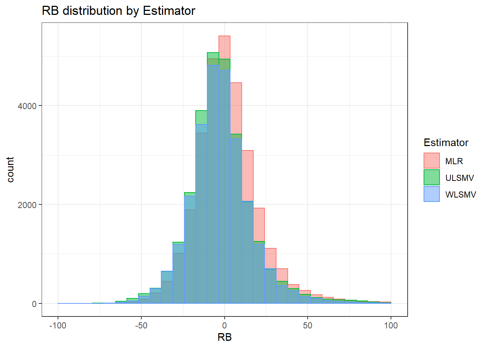
=============================
Tests of Homogeneity of Variance
Levenes Test: N1
Levene's Test for Homogeneity of Variance (center = "mean")
Df F value Pr(>F)
group 2 423 <2e-16 ***
83507
---
Signif. codes: 0 '***' 0.001 '**' 0.01 '*' 0.05 '.' 0.1 ' ' 1
Levenes Test: N2
Levene's Test for Homogeneity of Variance (center = "mean")
Df F value Pr(>F)
group 3 4865 <2e-16 ***
83506
---
Signif. codes: 0 '***' 0.001 '**' 0.01 '*' 0.05 '.' 0.1 ' ' 1
Levenes Test: ICC_OV
Levene's Test for Homogeneity of Variance (center = "mean")
Df F value Pr(>F)
group 2 725 <2e-16 ***
83507
---
Signif. codes: 0 '***' 0.001 '**' 0.01 '*' 0.05 '.' 0.1 ' ' 1
Levenes Test: ICC_LV
Levene's Test for Homogeneity of Variance (center = "mean")
Df F value Pr(>F)
group 1 30.5 3.3e-08 ***
83508
---
Signif. codes: 0 '***' 0.001 '**' 0.01 '*' 0.05 '.' 0.1 ' ' 1
Levenes Test: Estimator
Levene's Test for Homogeneity of Variance (center = "mean")
Df F value Pr(>F)
group 2 40.9 <2e-16 ***
83507
---
Signif. codes: 0 '***' 0.001 '**' 0.01 '*' 0.05 '.' 0.1 ' ' 1# was bad... Remove extreme outliers
quantile(sdat$RB, c(0.001, 0.01, 0.99, 0.999)) 0.1% 1% 99% 99.9%
-57.8 -43.2 61.5 132.6 # remove RB>100
sdat <- filter(sdat, RB <= 100)
boxplot(sdat$RB)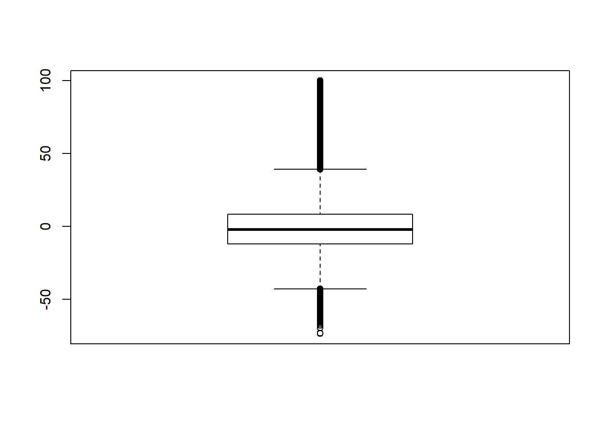
# rerun
## Check assumptions
anova_assumptions_check(
sdat, 'RB', factors = flist,
model = as.formula('RB ~ N1 + N2 + ICC_OV + ICC_LV + Estimator + N1:N2 + N1:ICC_OV + N1:ICC_LV + N1:Estimator + N2:ICC_OV + N2:ICC_LV + N2:Estimator + ICC_OV:ICC_LV + ICC_OV:Estimator + ICC_LV:Estimator'))
=============================
Tests and Plots of Normality: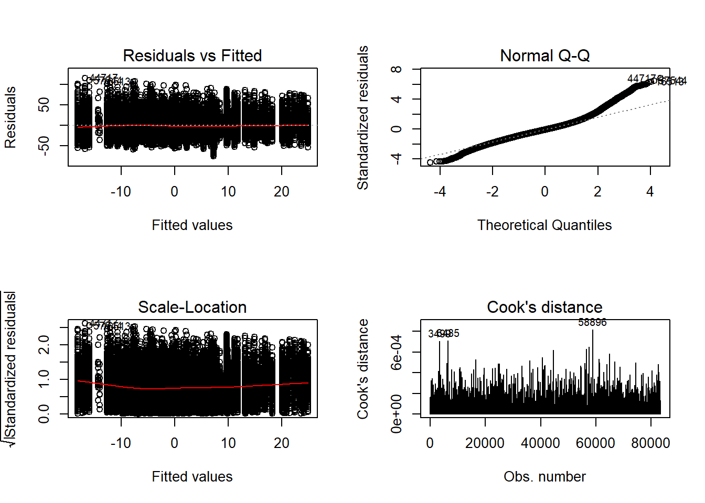
Shapiro-Wilks Test of Normality of Residuals:
Shapiro-Wilk normality test
data: res
W = 1, p-value <2e-16
K-S Test for Normality of Residuals:
One-sample Kolmogorov-Smirnov test
data: aov.out$residuals
D = 0.5, p-value <2e-16
alternative hypothesis: two-sided`stat_bin()` using `bins = 30`. Pick better value with `binwidth`.Warning: Removed 3 rows containing missing values (geom_bar).
`stat_bin()` using `bins = 30`. Pick better value with `binwidth`.Warning: Removed 4 rows containing missing values (geom_bar).`stat_bin()` using `bins = 30`. Pick better value with `binwidth`.Warning: Removed 3 rows containing missing values (geom_bar).`stat_bin()` using `bins = 30`. Pick better value with `binwidth`.Warning: Removed 2 rows containing missing values (geom_bar).`stat_bin()` using `bins = 30`. Pick better value with `binwidth`.Warning: Removed 3 rows containing missing values (geom_bar).
=============================
Tests of Homogeneity of Variance
Levenes Test: N1
Levene's Test for Homogeneity of Variance (center = "mean")
Df F value Pr(>F)
group 2 402 <2e-16 ***
83338
---
Signif. codes: 0 '***' 0.001 '**' 0.01 '*' 0.05 '.' 0.1 ' ' 1
Levenes Test: N2
Levene's Test for Homogeneity of Variance (center = "mean")
Df F value Pr(>F)
group 3 5496 <2e-16 ***
83337
---
Signif. codes: 0 '***' 0.001 '**' 0.01 '*' 0.05 '.' 0.1 ' ' 1
Levenes Test: ICC_OV
Levene's Test for Homogeneity of Variance (center = "mean")
Df F value Pr(>F)
group 2 852 <2e-16 ***
83338
---
Signif. codes: 0 '***' 0.001 '**' 0.01 '*' 0.05 '.' 0.1 ' ' 1
Levenes Test: ICC_LV
Levene's Test for Homogeneity of Variance (center = "mean")
Df F value Pr(>F)
group 1 3.84 0.05 .
83339
---
Signif. codes: 0 '***' 0.001 '**' 0.01 '*' 0.05 '.' 0.1 ' ' 1
Levenes Test: Estimator
Levene's Test for Homogeneity of Variance (center = "mean")
Df F value Pr(>F)
group 2 23 1e-10 ***
83338
---
Signif. codes: 0 '***' 0.001 '**' 0.01 '*' 0.05 '.' 0.1 ' ' 1ANOVA Results
model = as.formula('RB ~ N1 + N2 + ICC_OV + ICC_LV + Estimator + N1:N2 + N1:ICC_OV + N1:ICC_LV + N1:Estimator + N2:ICC_OV + N2:ICC_LV + N2:Estimator + ICC_OV:ICC_LV + ICC_OV:Estimator + ICC_LV:Estimator')
fit <- aov(model, data = sdat)
fit.out <- summary(fit)
fit.out Df Sum Sq Mean Sq F value Pr(>F)
N1 2 62807 31403 110.1 < 2e-16 ***
N2 3 18825 6275 22.0 3.1e-14 ***
ICC_OV 2 257199 128600 450.7 < 2e-16 ***
ICC_LV 1 1504117 1504117 5271.9 < 2e-16 ***
Estimator 2 377801 188901 662.1 < 2e-16 ***
N1:N2 6 301046 50174 175.9 < 2e-16 ***
N1:ICC_OV 4 577371 144343 505.9 < 2e-16 ***
N1:ICC_LV 2 339801 169900 595.5 < 2e-16 ***
N1:Estimator 4 436345 109086 382.3 < 2e-16 ***
N2:ICC_OV 6 42861 7143 25.0 < 2e-16 ***
N2:ICC_LV 3 302766 100922 353.7 < 2e-16 ***
N2:Estimator 6 37316 6219 21.8 < 2e-16 ***
ICC_OV:ICC_LV 2 667850 333925 1170.4 < 2e-16 ***
ICC_OV:Estimator 4 11184 2796 9.8 6.4e-08 ***
ICC_LV:Estimator 2 132612 66306 232.4 < 2e-16 ***
Residuals 83291 23763672 285
---
Signif. codes: 0 '***' 0.001 '**' 0.01 '*' 0.05 '.' 0.1 ' ' 1resultsList[["Level2-FactorCovariance"]] <- cbind(omega2(fit.out), p_omega2(fit.out))
resultsList[["Level2-FactorCovariance"]] omega^2 partial-omega^2
N1 0.0022 0.0026
N2 0.0006 0.0008
ICC_OV 0.0089 0.0107
ICC_LV 0.0522 0.0595
Estimator 0.0131 0.0156
N1:N2 0.0104 0.0124
N1:ICC_OV 0.0200 0.0237
N1:ICC_LV 0.0118 0.0141
N1:Estimator 0.0151 0.0180
N2:ICC_OV 0.0014 0.0017
N2:ICC_LV 0.0105 0.0125
N2:Estimator 0.0012 0.0015
ICC_OV:ICC_LV 0.0231 0.0273
ICC_OV:Estimator 0.0003 0.0004
ICC_LV:Estimator 0.0046 0.0055Level-2 item residual variances Standard Error
Assumption Checking
sdat <- filter(long_results, Parameter %like% "thetaB")
sdat <- sdat %>%
group_by(Replication, N1, N2, ICC_OV, ICC_LV, Estimator) %>%
summarise(RB = mean(RB))
# first, look at summary of RB Estimates
boxplot(sdat$RB)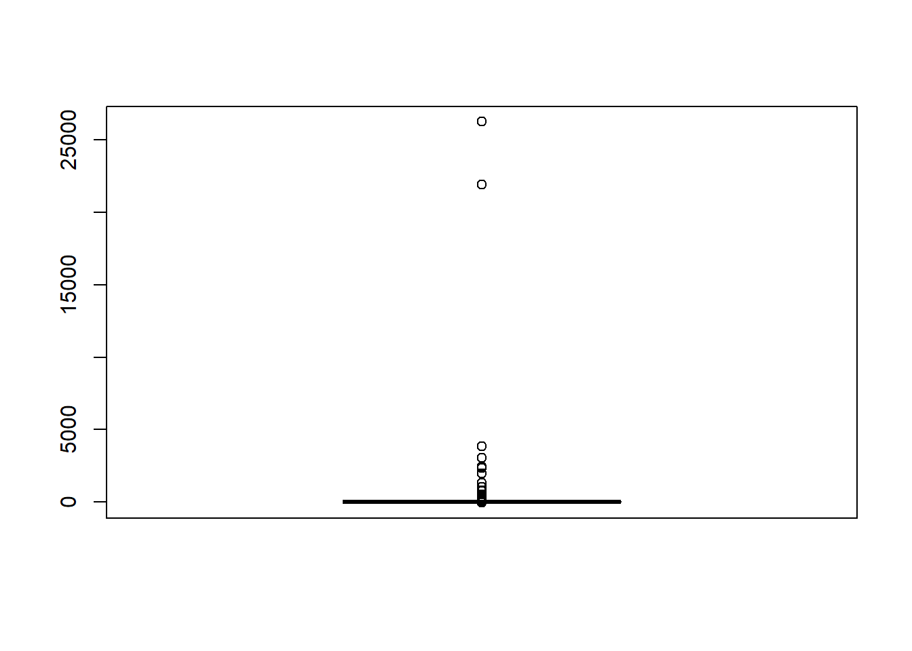
## model factors...
flist <- c('N1', 'N2', 'ICC_OV', 'ICC_LV', 'Estimator')
## Check assumptions
anova_assumptions_check(
sdat, 'RB', factors = flist,
model = as.formula('RB ~ N1 + N2 + ICC_OV + ICC_LV + Estimator + N1:N2 + N1:ICC_OV + N1:ICC_LV + N1:Estimator + N2:ICC_OV + N2:ICC_LV + N2:Estimator + ICC_OV:ICC_LV + ICC_OV:Estimator + ICC_LV:Estimator'))
=============================
Tests and Plots of Normality: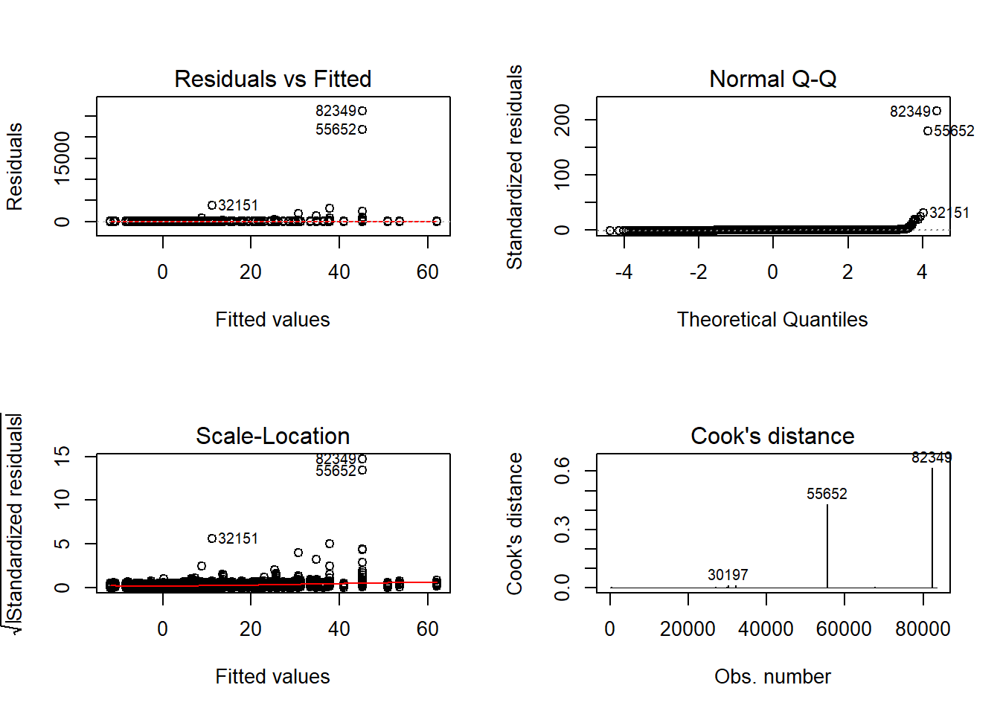
Shapiro-Wilks Test of Normality of Residuals:
Shapiro-Wilk normality test
data: res
W = 0.09, p-value <2e-16
K-S Test for Normality of Residuals:
One-sample Kolmogorov-Smirnov test
data: aov.out$residuals
D = 0.4, p-value <2e-16
alternative hypothesis: two-sided`stat_bin()` using `bins = 30`. Pick better value with `binwidth`.Warning: Removed 71 rows containing non-finite values (stat_bin).Warning: Removed 3 rows containing missing values (geom_bar).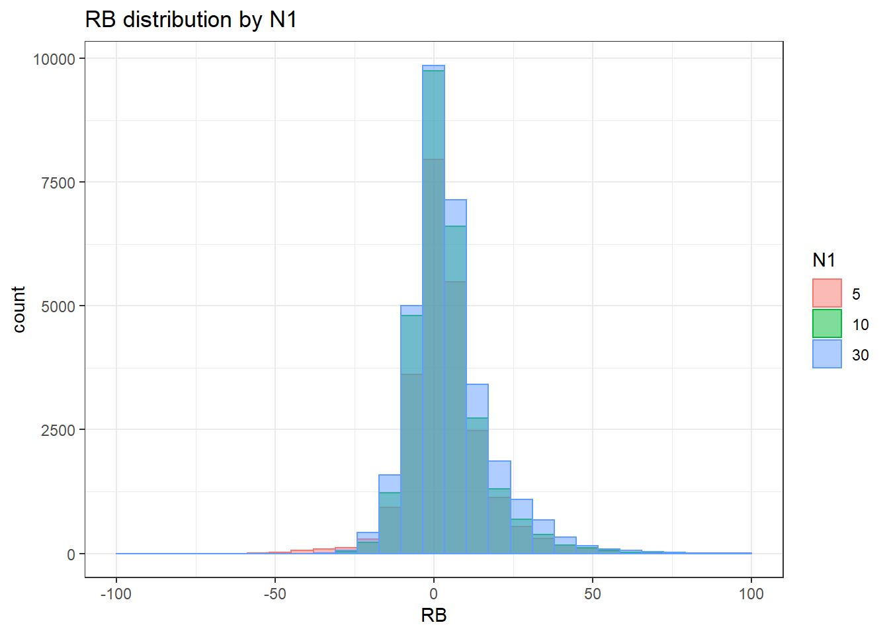
`stat_bin()` using `bins = 30`. Pick better value with `binwidth`.Warning: Removed 71 rows containing non-finite values (stat_bin).Warning: Removed 4 rows containing missing values (geom_bar).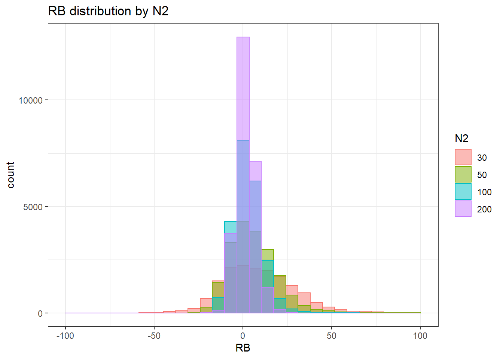
`stat_bin()` using `bins = 30`. Pick better value with `binwidth`.Warning: Removed 71 rows containing non-finite values (stat_bin).Warning: Removed 3 rows containing missing values (geom_bar).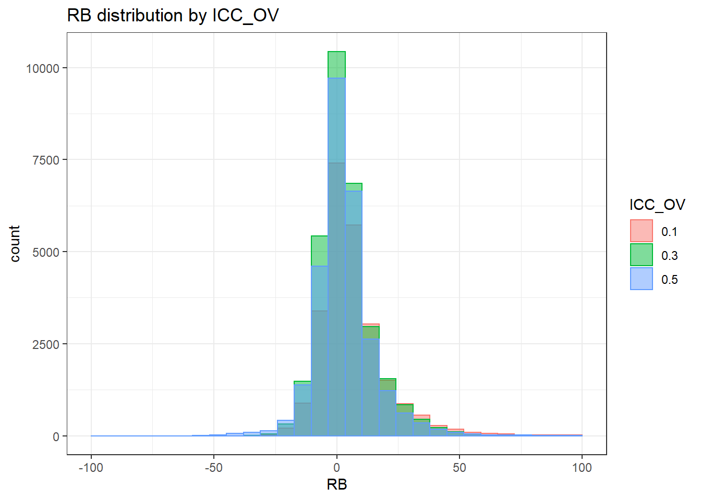
`stat_bin()` using `bins = 30`. Pick better value with `binwidth`.Warning: Removed 71 rows containing non-finite values (stat_bin).Warning: Removed 2 rows containing missing values (geom_bar).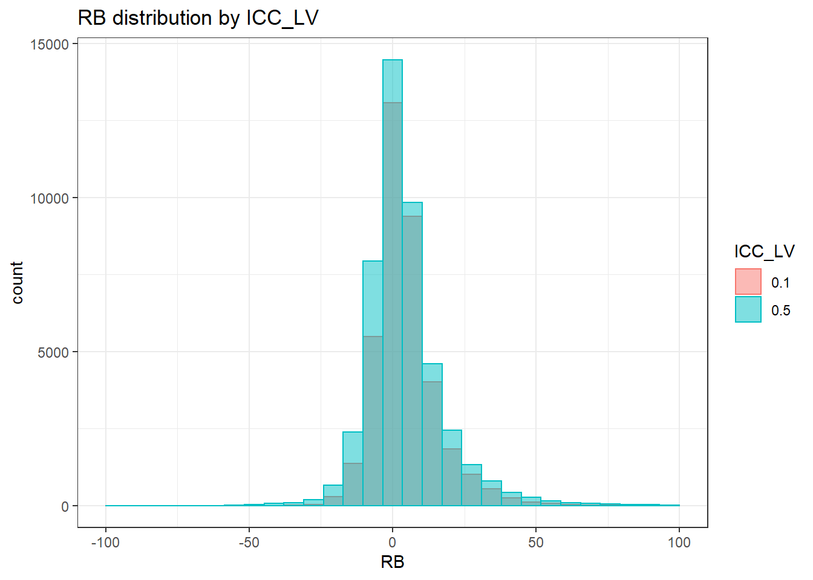
`stat_bin()` using `bins = 30`. Pick better value with `binwidth`.Warning: Removed 71 rows containing non-finite values (stat_bin).Warning: Removed 3 rows containing missing values (geom_bar).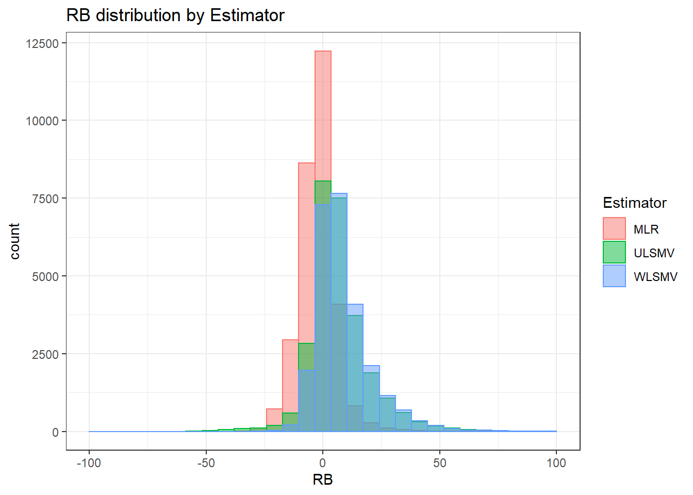
=============================
Tests of Homogeneity of Variance
Levenes Test: N1
Levene's Test for Homogeneity of Variance (center = "mean")
Df F value Pr(>F)
group 2 6.78 0.0011 **
83507
---
Signif. codes: 0 '***' 0.001 '**' 0.01 '*' 0.05 '.' 0.1 ' ' 1
Levenes Test: N2
Levene's Test for Homogeneity of Variance (center = "mean")
Df F value Pr(>F)
group 3 71 <2e-16 ***
83506
---
Signif. codes: 0 '***' 0.001 '**' 0.01 '*' 0.05 '.' 0.1 ' ' 1
Levenes Test: ICC_OV
Levene's Test for Homogeneity of Variance (center = "mean")
Df F value Pr(>F)
group 2 5.01 0.0067 **
83507
---
Signif. codes: 0 '***' 0.001 '**' 0.01 '*' 0.05 '.' 0.1 ' ' 1
Levenes Test: ICC_LV
Levene's Test for Homogeneity of Variance (center = "mean")
Df F value Pr(>F)
group 1 15.3 9.3e-05 ***
83508
---
Signif. codes: 0 '***' 0.001 '**' 0.01 '*' 0.05 '.' 0.1 ' ' 1
Levenes Test: Estimator
Levene's Test for Homogeneity of Variance (center = "mean")
Df F value Pr(>F)
group 2 23.8 4.9e-11 ***
83507
---
Signif. codes: 0 '***' 0.001 '**' 0.01 '*' 0.05 '.' 0.1 ' ' 1# was bad... Remove extreme outliers
quantile(sdat$RB, c(0.001, 0.01, 0.99, 0.999)) 0.1% 1% 99% 99.9%
-38.6 -19.8 47.0 94.6 # remove RB>100
sdat <- filter(sdat, RB <= 100)
boxplot(sdat$RB)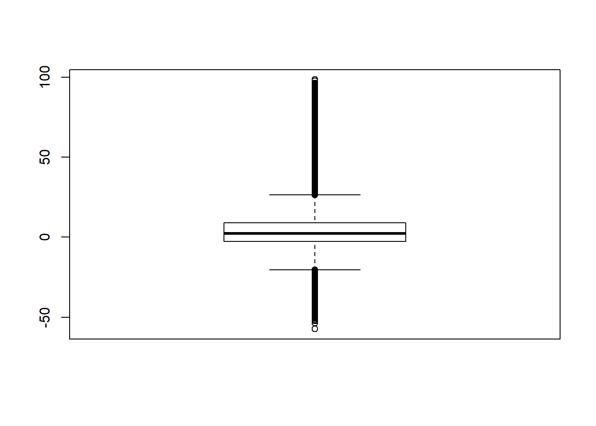
# rerun
## Check assumptions
anova_assumptions_check(
sdat, 'RB', factors = flist,
model = as.formula('RB ~ N1 + N2 + ICC_OV + ICC_LV + Estimator + N1:N2 + N1:ICC_OV + N1:ICC_LV + N1:Estimator + N2:ICC_OV + N2:ICC_LV + N2:Estimator + ICC_OV:ICC_LV + ICC_OV:Estimator + ICC_LV:Estimator'))
=============================
Tests and Plots of Normality: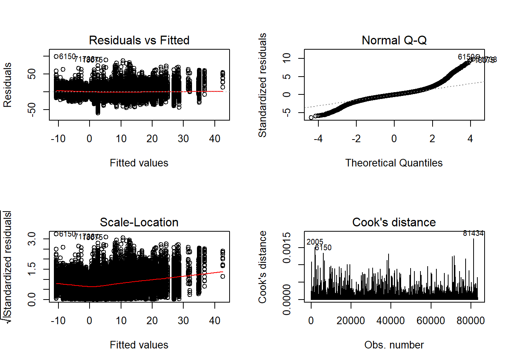
Shapiro-Wilks Test of Normality of Residuals:
Shapiro-Wilk normality test
data: res
W = 0.9, p-value <2e-16
K-S Test for Normality of Residuals:
One-sample Kolmogorov-Smirnov test
data: aov.out$residuals
D = 0.4, p-value <2e-16
alternative hypothesis: two-sided`stat_bin()` using `bins = 30`. Pick better value with `binwidth`.Warning: Removed 3 rows containing missing values (geom_bar).`stat_bin()` using `bins = 30`. Pick better value with `binwidth`.Warning: Removed 4 rows containing missing values (geom_bar).`stat_bin()` using `bins = 30`. Pick better value with `binwidth`.Warning: Removed 3 rows containing missing values (geom_bar).`stat_bin()` using `bins = 30`. Pick better value with `binwidth`.Warning: Removed 2 rows containing missing values (geom_bar).`stat_bin()` using `bins = 30`. Pick better value with `binwidth`.Warning: Removed 3 rows containing missing values (geom_bar).
=============================
Tests of Homogeneity of Variance
Levenes Test: N1
Levene's Test for Homogeneity of Variance (center = "mean")
Df F value Pr(>F)
group 2 157 <2e-16 ***
83436
---
Signif. codes: 0 '***' 0.001 '**' 0.01 '*' 0.05 '.' 0.1 ' ' 1
Levenes Test: N2
Levene's Test for Homogeneity of Variance (center = "mean")
Df F value Pr(>F)
group 3 9491 <2e-16 ***
83435
---
Signif. codes: 0 '***' 0.001 '**' 0.01 '*' 0.05 '.' 0.1 ' ' 1
Levenes Test: ICC_OV
Levene's Test for Homogeneity of Variance (center = "mean")
Df F value Pr(>F)
group 2 225 <2e-16 ***
83436
---
Signif. codes: 0 '***' 0.001 '**' 0.01 '*' 0.05 '.' 0.1 ' ' 1
Levenes Test: ICC_LV
Levene's Test for Homogeneity of Variance (center = "mean")
Df F value Pr(>F)
group 1 633 <2e-16 ***
83437
---
Signif. codes: 0 '***' 0.001 '**' 0.01 '*' 0.05 '.' 0.1 ' ' 1
Levenes Test: Estimator
Levene's Test for Homogeneity of Variance (center = "mean")
Df F value Pr(>F)
group 2 1735 <2e-16 ***
83436
---
Signif. codes: 0 '***' 0.001 '**' 0.01 '*' 0.05 '.' 0.1 ' ' 1ANOVA Results
model = as.formula('RB ~ N1 + N2 + ICC_OV + ICC_LV + Estimator + N1:N2 + N1:ICC_OV + N1:ICC_LV + N1:Estimator + N2:ICC_OV + N2:ICC_LV + N2:Estimator + ICC_OV:ICC_LV + ICC_OV:Estimator + ICC_LV:Estimator')
fit <- aov(model, data = sdat)
fit.out <- summary(fit)
fit.out Df Sum Sq Mean Sq F value Pr(>F)
N1 2 25316 12658 141.9 < 2e-16 ***
N2 3 609958 203319 2280.0 < 2e-16 ***
ICC_OV 2 214635 107318 1203.5 < 2e-16 ***
ICC_LV 1 508 508 5.7 0.017 *
Estimator 2 2199362 1099681 12331.8 < 2e-16 ***
N1:N2 6 66553 11092 124.4 < 2e-16 ***
N1:ICC_OV 4 310637 77659 870.9 < 2e-16 ***
N1:ICC_LV 2 678 339 3.8 0.022 *
N1:Estimator 4 159563 39891 447.3 < 2e-16 ***
N2:ICC_OV 6 227913 37985 426.0 < 2e-16 ***
N2:ICC_LV 3 2749 916 10.3 9.2e-07 ***
N2:Estimator 6 962350 160392 1798.6 < 2e-16 ***
ICC_OV:ICC_LV 2 94683 47342 530.9 < 2e-16 ***
ICC_OV:Estimator 4 112664 28166 315.9 < 2e-16 ***
ICC_LV:Estimator 2 64208 32104 360.0 < 2e-16 ***
Residuals 83389 7436157 89
---
Signif. codes: 0 '***' 0.001 '**' 0.01 '*' 0.05 '.' 0.1 ' ' 1resultsList[["Level2-ResidualCovariance"]] <- cbind(omega2(fit.out), p_omega2(fit.out))
resultsList[["Level2-ResidualCovariance"]] omega^2 partial-omega^2
N1 0.0020 0.0034
N2 0.0488 0.0757
ICC_OV 0.0172 0.0280
ICC_LV 0.0000 0.0001
Estimator 0.1761 0.2281
N1:N2 0.0053 0.0088
N1:ICC_OV 0.0248 0.0400
N1:ICC_LV 0.0000 0.0001
N1:Estimator 0.0127 0.0209
N2:ICC_OV 0.0182 0.0297
N2:ICC_LV 0.0002 0.0003
N2:Estimator 0.0770 0.1145
ICC_OV:ICC_LV 0.0076 0.0125
ICC_OV:Estimator 0.0090 0.0149
ICC_LV:Estimator 0.0051 0.0085Summary Table of Effect Sizes
tb <- cbind(resultsList[[1]], resultsList[[2]], resultsList[[3]], resultsList[[4]])
kable(tb, format='html') %>%
kable_styling(full_width = T) %>%
add_header_above(c('Effect'=1,'Factor Loadings'=2,'Level-1 Factor Covariance'=2,'Level-2 Factor (co)variance'=2,'Level-2 Item Residual Variance'=2))| omega^2 | partial-omega^2 | omega^2 | partial-omega^2 | omega^2 | partial-omega^2 | omega^2 | partial-omega^2 | |
|---|---|---|---|---|---|---|---|---|
| N1 | 0.051 | 0.108 | 0.018 | 0.031 | 0.002 | 0.003 | 0.002 | 0.003 |
| N2 | 0.003 | 0.008 | 0.039 | 0.064 | 0.001 | 0.001 | 0.049 | 0.076 |
| ICC_OV | 0.043 | 0.094 | 0.019 | 0.032 | 0.009 | 0.011 | 0.017 | 0.028 |
| ICC_LV | 0.007 | 0.016 | 0.012 | 0.021 | 0.052 | 0.060 | 0.000 | 0.000 |
| Estimator | 0.108 | 0.206 | 0.145 | 0.204 | 0.013 | 0.016 | 0.176 | 0.228 |
| N1:N2 | 0.024 | 0.055 | 0.030 | 0.050 | 0.010 | 0.012 | 0.005 | 0.009 |
| N1:ICC_OV | 0.017 | 0.039 | 0.010 | 0.018 | 0.020 | 0.024 | 0.025 | 0.040 |
| N1:ICC_LV | 0.005 | 0.013 | 0.002 | 0.003 | 0.012 | 0.014 | 0.000 | 0.000 |
| N1:Estimator | 0.039 | 0.086 | 0.018 | 0.030 | 0.015 | 0.018 | 0.013 | 0.021 |
| N2:ICC_OV | 0.011 | 0.026 | 0.009 | 0.015 | 0.001 | 0.002 | 0.018 | 0.030 |
| N2:ICC_LV | 0.017 | 0.038 | 0.010 | 0.018 | 0.010 | 0.012 | 0.000 | 0.000 |
| N2:Estimator | 0.003 | 0.008 | 0.027 | 0.045 | 0.001 | 0.002 | 0.077 | 0.114 |
| ICC_OV:ICC_LV | 0.044 | 0.096 | 0.021 | 0.036 | 0.023 | 0.027 | 0.008 | 0.012 |
| ICC_OV:Estimator | 0.176 | 0.297 | 0.056 | 0.090 | 0.000 | 0.000 | 0.009 | 0.015 |
| ICC_LV:Estimator | 0.033 | 0.074 | 0.016 | 0.028 | 0.005 | 0.006 | 0.005 | 0.008 |
## Print out in tex
print(xtable(tb, digits = 3), booktabs = T, include.rownames = T)% latex table generated in R 3.6.3 by xtable 1.8-4 package
% Mon Jun 01 23:37:01 2020
\begin{table}[ht]
\centering
\begin{tabular}{rrrrrrrrr}
\toprule
& omega\verb|^|2 & partial-omega\verb|^|2 & omega\verb|^|2 & partial-omega\verb|^|2 & omega\verb|^|2 & partial-omega\verb|^|2 & omega\verb|^|2 & partial-omega\verb|^|2 \\
\midrule
N1 & 0.051 & 0.108 & 0.018 & 0.031 & 0.002 & 0.003 & 0.002 & 0.003 \\
N2 & 0.003 & 0.008 & 0.039 & 0.064 & 0.001 & 0.001 & 0.049 & 0.076 \\
ICC\_OV & 0.043 & 0.094 & 0.019 & 0.032 & 0.009 & 0.011 & 0.017 & 0.028 \\
ICC\_LV & 0.007 & 0.015 & 0.012 & 0.021 & 0.052 & 0.059 & 0.000 & 0.000 \\
Estimator & 0.108 & 0.205 & 0.145 & 0.204 & 0.013 & 0.016 & 0.176 & 0.228 \\
N1:N2 & 0.024 & 0.055 & 0.030 & 0.050 & 0.010 & 0.012 & 0.005 & 0.009 \\
N1:ICC\_OV & 0.017 & 0.039 & 0.010 & 0.018 & 0.020 & 0.024 & 0.025 & 0.040 \\
N1:ICC\_LV & 0.005 & 0.013 & 0.002 & 0.003 & 0.012 & 0.014 & 0.000 & 0.000 \\
N1:Estimator & 0.039 & 0.086 & 0.018 & 0.030 & 0.015 & 0.018 & 0.013 & 0.021 \\
N2:ICC\_OV & 0.011 & 0.026 & 0.009 & 0.015 & 0.001 & 0.002 & 0.018 & 0.030 \\
N2:ICC\_LV & 0.017 & 0.038 & 0.010 & 0.018 & 0.010 & 0.012 & 0.000 & 0.000 \\
N2:Estimator & 0.003 & 0.008 & 0.027 & 0.045 & 0.001 & 0.002 & 0.077 & 0.114 \\
ICC\_OV:ICC\_LV & 0.044 & 0.096 & 0.021 & 0.035 & 0.023 & 0.027 & 0.008 & 0.012 \\
ICC\_OV:Estimator & 0.176 & 0.297 & 0.056 & 0.090 & 0.000 & 0.000 & 0.009 & 0.015 \\
ICC\_LV:Estimator & 0.033 & 0.074 & 0.016 & 0.028 & 0.005 & 0.005 & 0.005 & 0.008 \\
\bottomrule
\end{tabular}
\end{table}# ## Table of partial-omega2
# tb <- cbind(resultsList[[1]][,1, drop=F], resultsList[[2]][,1, drop=F], resultsList[[3]][,1, drop=F], resultsList[[4]][,1, drop=F])
#
# kable(tb, format='html') %>%
# kable_styling(full_width = T) %>%
# add_header_above(c('Effect'=1,'Factor Loadings'=2,'Level-1 Factor Covariance'=2,'Level-2 Factor (co)variance'=2,'Level-2 Item Residual Variance'=2))
#
# ## Print out in tex
# print(xtable(tb, digits = 3), booktabs = T, include.rownames = T)
#
#
# ## Table of omega-2
# tb <- cbind(resultsList[[1]][,1, drop=F], resultsList[[2]][,1, drop=F], resultsList[[3]][,1, drop=F], resultsList[[4]][,1, drop=F])
#
# kable(tb, format='html') %>%
# kable_styling(full_width = T) %>%
# add_header_above(c('Effect'=1,'Factor Loadings'=2,'Level-1 Factor Covariance'=2,'Level-2 Factor (co)variance'=2,'Level-2 Item Residual Variance'=2))
#
# ## Print out in tex
# print(xtable(tb, digits = 3), booktabs = T, include.rownames = T)
sessionInfo()R version 3.6.3 (2020-02-29)
Platform: x86_64-w64-mingw32/x64 (64-bit)
Running under: Windows 10 x64 (build 18362)
Matrix products: default
locale:
[1] LC_COLLATE=English_United States.1252
[2] LC_CTYPE=English_United States.1252
[3] LC_MONETARY=English_United States.1252
[4] LC_NUMERIC=C
[5] LC_TIME=English_United States.1252
attached base packages:
[1] stats graphics grDevices utils datasets methods base
other attached packages:
[1] xtable_1.8-4 kableExtra_1.1.0 cowplot_1.0.0
[4] MplusAutomation_0.7-3 data.table_1.12.8 patchwork_1.0.0
[7] forcats_0.5.0 stringr_1.4.0 dplyr_0.8.5
[10] purrr_0.3.4 readr_1.3.1 tidyr_1.1.0
[13] tibble_3.0.1 ggplot2_3.3.0 tidyverse_1.3.0
[16] workflowr_1.6.2
loaded via a namespace (and not attached):
[1] nlme_3.1-144 fs_1.4.1 lubridate_1.7.8 webshot_0.5.2
[5] httr_1.4.1 rprojroot_1.3-2 tools_3.6.3 backports_1.1.7
[9] R6_2.4.1 DBI_1.1.0 colorspace_1.4-1 withr_2.2.0
[13] tidyselect_1.1.0 curl_4.3 compiler_3.6.3 git2r_0.27.1
[17] cli_2.0.2 rvest_0.3.5 xml2_1.3.2 labeling_0.3
[21] scales_1.1.1 digest_0.6.25 foreign_0.8-75 rmarkdown_2.1
[25] rio_0.5.16 pkgconfig_2.0.3 htmltools_0.4.0 highr_0.8
[29] dbplyr_1.4.4 rlang_0.4.6 readxl_1.3.1 rstudioapi_0.11
[33] generics_0.0.2 farver_2.0.3 jsonlite_1.6.1 zip_2.0.4
[37] car_3.0-8 magrittr_1.5 texreg_1.36.23 Rcpp_1.0.4.6
[41] munsell_0.5.0 fansi_0.4.1 abind_1.4-5 proto_1.0.0
[45] lifecycle_0.2.0 stringi_1.4.6 yaml_2.2.1 carData_3.0-4
[49] plyr_1.8.6 grid_3.6.3 blob_1.2.1 parallel_3.6.3
[53] promises_1.1.0 crayon_1.3.4 lattice_0.20-38 haven_2.3.0
[57] pander_0.6.3 hms_0.5.3 knitr_1.28 pillar_1.4.4
[61] boot_1.3-24 reprex_0.3.0 glue_1.4.1 evaluate_0.14
[65] modelr_0.1.8 vctrs_0.3.0 httpuv_1.5.2 cellranger_1.1.0
[69] gtable_0.3.0 assertthat_0.2.1 gsubfn_0.7 xfun_0.14
[73] openxlsx_4.1.5 broom_0.5.6 coda_0.19-3 later_1.0.0
[77] viridisLite_0.3.0 ellipsis_0.3.1